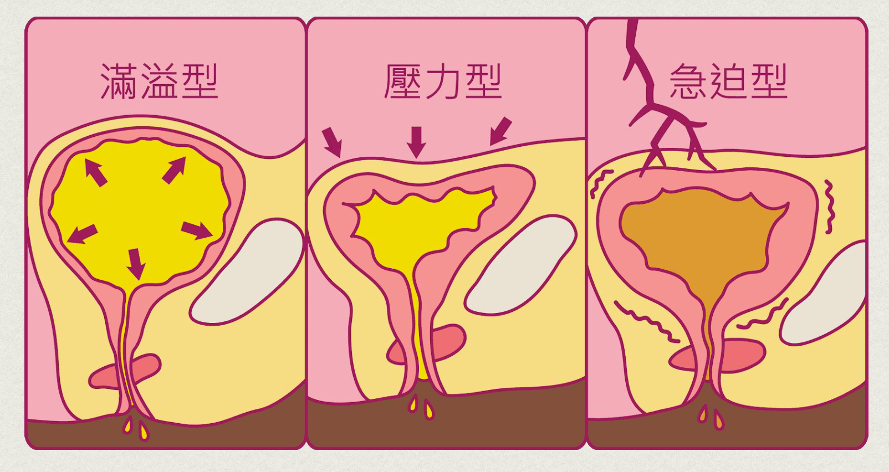

上泌尿道
位置：腎臟
發炎時為腎盂腎炎。
症狀：腰痛、腹痛、發燒等情況
妳知道，女性也可以前往泌尿科看診嗎？過往私密處生病時，女性往往直覺求診婦產科。然而，泌尿科能針對泌尿道問題做更多細部的診斷。這篇介紹女性泌尿道常見問題：泌尿道發炎感染、尿失禁（漏尿）進行簡單的衛教說明，讓大家更了解自己的身體狀況，即時求助專業醫師診斷。
泌尿道反覆搔癢、感染、疼痛、分泌物異常多量
尿失禁、漏尿，不敢長途旅遊、怕找不到廁所
一個打噴嚏就漏尿，影響到社交和日常生活超尷尬
排尿疼痛、排尿困難
女性同時擁有產道與泌尿道，婦產科主治女性子宮、卵巢、懷孕過程的診斷。泌尿科則更針對泌尿道問題進行診斷。女性有泌尿道問題，同樣可以求助於泌尿科看診。
泌尿道分上泌尿道和下泌尿道，泌尿道感染發生在不同地方，會形成不同的病症。
位置：腎臟
發炎時為腎盂腎炎。
症狀：腰痛、腹痛、發燒等情況
位置：膀胱
發炎時即膀胱炎。
症狀：頻尿、排尿熱、緊、痛
受到大腸桿菌、淋病雙球菌、披衣菌(Chlamydia)、單純皰疹病毒、巨細胞病毒等感染，都可能是造成尿道炎的成因。若長期忽略病兆，可能會導致嚴重併發症：復發型感染、腎盂腎炎、腎衰竭、早產、敗血症等，不容忽視。
生活習慣不好
長時間忍尿。
飲水量過少。（據衛生部國民健康署建議，成人每日飲水量約落在1500-2000c.c）
親密行為、避孕方法不當。
衛生習慣不良、如廁、沐浴沒有採正確方式清潔私密處。
更年期：尿道感染機率比起一般年齡層，約提升 10-15 倍之多。
廔管：尤其是婦科手術後，若受到感染，容易在肛門附近長成異物組織。
結石：女性也可能因為少喝水、過度忙碌、忍尿導致結石。
子宮脫垂：子宮離開原本正常位置，經骨盆下垂到陰道。
抗生素治療
服用抗生素進行完整週期的治療，可有效改善感染。
多喝水
平時多喝水，每日喝滿1500-2000c.c 預防泌尿道感染。
建立良好的生活習慣
早睡早起、不憋尿、多喝水、補充蔓越莓。
加強預防
依據醫師診斷建議，使用甘露醣、陰道凝膠保養泌尿道。
矯正生理結構異常
專業治療或手術治療改善子宮脫垂、結石。
「在不自主的情況下，不小心滲漏尿液出來」即可稱為尿失禁。台灣 40 歲以上的婦女，有將近 25％ 有漏尿困擾，大多是因為隨著年紀增長或經過生育，骨盆肌肉鬆弛、尿道括約肌逐漸失彈性而導致。
有時因為噴嚏、提重物、一時用力過猛或是大笑時都容易產生漏尿情形，困擾著眾多女性。
尿失禁分三種類型：
因膀胱出口長期阻塞或收縮無力，無法將尿排乾淨，導致餘尿一直累積直到超出膀胱容量，導致尿液滿溢；通常這類病患膀胱鬆弛無力，治療時膀胱已經被撐得很大。
因膀胱支撐組織變弱，中年婦女在打噴嚏、提重物、一時用力過猛或是大笑時都不經意漏尿。
這類病人因為逼尿肌不穩定、膀胱不穩定、有尿易憋不住，除尿失禁外，還有嚴重急尿、頻尿、夜尿等症狀。

根據美國泌尿科醫學會的調查，其中關於頻尿、尿失禁的患病排名，台灣女性排名第一。尿失禁容易隨著年紀增長上升：
30-60 歲婦女：26%
60 歲以上婦女：38%
住安養機構的婦女：48%
女性的尿道較短、閉鎖壓力小，在進入更年期停經之後，因賀爾蒙減少，泌尿道粘膜跟著萎縮，因此容易尿失禁。
由於尿失禁不算重大疾病，加上較為私密，許多女性不願求診，而是透過少喝水來避免漏尿或找廁所，容易導致泌尿道感染的惡性循環。
吸菸
停經、更年期後婦女賀爾蒙減少
經常做勞力粗重工作
經歷多次生產
反覆泌尿道感染
體重過重
尿道內括約肌老化
藥物治療
使用抗膽鹼製劑 （anticholinergic agents） 和 β3 腎上腺素受體作用劑（beta-3 adrenoreceptors），改善排尿的急迫性及頻次。
物理治療
1. 凱格爾運動：
患者自行鍛鍊陰道肌肉，感受自身肌肉的收縮控制。
2. 生理回饋儀：
藉由壓力或肌電生理回饋，將肌肉的收縮用視覺或聽覺的方式呈現在監視器螢幕，患者可以從螢幕上看到肌肉的收縮方式，學習控制骨盆底肌肉收縮。
3. 骨盆底電刺激療法：
可參考我們的鍛肌椅。透過電療方式刺激骨盆底收縮，一週治療 2-3 次。若能搭配 PRP 治療效果更好。
手術治療
如果出自生理結構性的異常導致尿失禁（例如子宮脫垂）醫師會依據每位患者狀況，採取不同手術治療。
1. 陰道懸吊術：
手術會用腹腔鏡方式，經過陰道，用縫線將陰道上部固定於腹腔內，來拉提膀胱頸，透過調整膀胱頸的位置，當使用負壓時，可形成阻力防止尿失禁。
2. 自體筋膜恥骨陰道吊帶術：
利用自體吊帶或人工吊帶，經陰道置入膀胱及尿道下方，上拉至恥骨上緣固定，形成吊床般的支撐作用，當使用腹壓時，可形成阻力，阻止尿失禁產生。
3. 尿道中段無張力性吊帶手術(TVT/TOT手術)：
TVT 全名為「無張力陰道帶手術」，TOT為「經閉孔吊帶手術」。兩者都是運用人工網膜，通過陰道，將膀胱頸和尿道吊起來，形成吊床般的支撐作用這兩者的治癒率相當高，雖然手術傷口小，治癒率高達 90％，但對於膀胱、 腸道及大血管仍有受傷的風險。詳細的狀況，醫師會依據病患的嚴重程度去做評估選擇。
再生醫學
再生醫學是運用 PRP（自體血小板增生療法）進行治療，經由抽血，離心濃縮萃取出生長因子，打在尿道括約肌，使其自行增生修復。目前是最低侵襲性、副作用最少的治療方式。
| 比較項目 | 陰道懸吊術 | 自體筋膜恥骨陰道吊帶術 | TVT/TOT手術 | 再生醫學 |
|---|---|---|---|---|
| 手術時間 | 長 | 長 | 短 | 極短 |
| 麻醉（註1） | 全身 | 全/半身 | 全/半身 | 舒眠/局部麻醉 |
| 復發機會 | 低 | 低 | 極低 | 極低 |
| 拔尿管時間 | 2-3天 | 2-3天 | 1天 | 可不需置放 |
| 術後併發症機率 | 少 | 少 | 多（註2） | 極少 |
| 術後疼痛 | 中 | 高 | 中 | 極低 |
註1：麻醉評估:醫師會根據病患狀況、症狀程度、並使判斷來採取全身或局部麻醉等專業建議。
註2：TVT/TOT 手術後併發症的治癒率高達 90％，但對膀胱、 腸道及大血管仍有受傷風險。詳細情形，醫師會依據病患的嚴重程度去評估，做出最適宜的判斷。
『創造非凡精彩人生』
健康，其實是一個動詞，需要通過努力與踏實砌成的動詞，很多人會說奮鬥不一定會成功，但我們要說：「不奮鬥，絕對失敗」只有奮鬥過的人生，才能不留遺憾、才能更加精彩也才能至善至美。
『捍衛男性泌密健康』
泌密健康，就四個字，但它並不會讓你一輩子都過得那麼容易，轉機就在於你堅強的那一刻，你的人生，會因為你的泌密健康，過得更性福美滿，也過得更加精彩

【本資訊無法取代醫師親自關心您；若有副作用等使用問題，請洽醫師諮詢。】
一對一門診，確保隱私
許多女性因為害羞，私密處出現異狀、排尿出現問題時往往羞於問診，而錯過黃金治療期。泌密會客室的醫生擁有泌尿道學科上的專業知識與豐富臨床經驗，更重要地，是絕對注重每位病患的隱私。
坦然求醫才能及早發現問題，即時治療。診間以一對一方式進行，對病患症狀悉心照護，確保每位病患的隱私。讓病患安心主訴病情。
完整檢測泌尿道疾病，找出病灶根源
求診泌尿科，與婦產科有別，能針對泌尿道系統提供更深入仔細的檢查項目和診斷。包含：X 光檢查尿結石、超音波檢查腎臟發炎或積水、尿液檢查與膀胱鏡檢查
透過完整的泌尿道診斷，找出病灶根源，由兩位專業醫師的專業經驗，做出確切的評估，採取適當治療。
提供專業診療，持續追蹤
無論是婦女常見的頻尿、尿失禁、排尿困難，或中老年婦女常見的骨盆鬆弛、子宮脫垂、膀胱及直腸脫垂問題，泌密會客室提供專業診斷，持續追蹤病情，協助患者恢復健康或控制症狀。
【本資訊無法取代醫師親自關心您；若有副作用等使用問題，請洽醫師諮詢。】
津久診所
台北市中山區松江路276號3樓
捷運
橘線(中和新蘆線)行天宮站的4號出口，出站後右轉步行40秒就可以看到津久診所的大招牌，搭電梯上3樓。
開車
1.台灣聯通停車場-將捷二場(停車塔，眾多信用卡可停車折抵): 台北市中山區松江路336號
2.聯邦佳佳大樓停車場(地下平面停車場): 台北市中山區松江路235巷22號
坐公車
1.捷運行天宮站(松江路) 109,1550A,203,214, 214直,222,26,277,279,280,280直,41,49,5,5203A,612,676,9069,9069A,945, 松江新生幹線,林口-台北長庚醫院,紅57
2. 松江新村 214, 214直,286副,49,9069,9069A,945
3. 民權松江路口 1841,1841A,1842,1842A,225,225區,5250,5250A,617,617副,63,685,688,801,803,內科通勤專車18,敦化幹線，民權幹線,紅29,紅31